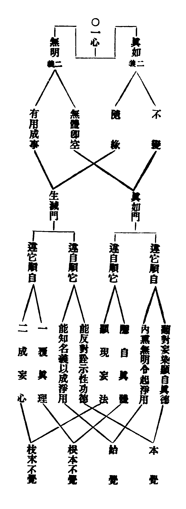

卍新纂大日本續藏經 第57冊
No.964 台宗十類因革論 (4卷)
【宋 善月述】
第 1 卷
台宗十類因革論目次
卷第一
經體論第一
總論篇上
別例中
法華開癈取體例 離合法相辨體例
旁出涅槃五章例 諸經指體同異例
餘論下
經王論第二
總篇上
別例中
法華釋王部教例 光明經王文旨例
王體同異例
餘論下
□□□□□
□□□
別例中
隨緣生法大體例
兼出二論立識生法不同例
示隨緣文義所出論疏例
約今別圓通示隨緣例 因生法言無住本例
義涉性類二種例
餘論下
卷第二
習氣論第四
總篇上
別例中
三惑正使名相例 約大小乘言習氣不同例
圓位斷習進否有無例 文指結習通別同異例
示正習斷破文涉餘義例
餘論下
觀法論第五
總篇上
別例中
三千大旨例上 三千論文例中
三千釋疑例下 三種觀法例
十乘觀相例 四種三昧行法例
事理二觀例 □□□□□□□□□
觀心觀佛例 勝別三觀兼餘觀相例
□□□□□
通相餘論上
通相餘論下
境觀不二兼附餘義例
□□□
□□□□□
卷第三
觀法餘論下
二空論第六
總篇上
別例中
示性相生法觀相通別例
對教明觀進否例 約觀對諦破顯不同例
圓論性相兼涉三境例 總明二空餘義例
餘論下
被接論第七
總篇上
別例中
通示接義有含中點示發習例
言接不接并接會同異例
對明玄及止觀三接一接例
因辨涅槃被接可否例 兼出被接餘義例
餘論下
教證論第八
總篇上
別例中
教證大體例 四種教證例
初心知中例 圓修橫學例
六種性習文涉教證例 散出諸文明教證餘義例
餘論下
卷第四
壽量論第九
總篇上
別例中
四佛身相機見體用同異例
三身壽量身說不同例 諸身開合例
六能四句釋量無量例 應相勝劣例
教主應相例 身土感應例
餘論下
四土論第十
總篇上
別例中
通示四土名相即離相攝例
別論寂光體相例 土教相對橫竪例
四土各有淨穢例 明方便土意生身例
兼出土教餘義例
餘論下
台宗十類因革論(終)
No. 964
台宗十類因革論卷第一
句推撿而後入故。次之以二空。二空亦觀法也。直藥病之加者耳。故曰佛世當機。何勞設此。雖宜於滅後。而亦通佛世故。有通教四性無生之幻。夫四性無生者即空也。以即空故含中。含中為被接之本。故次之以被接。然被接者。教道之所有也。故曰今前六重。仍存教道。於法華前。逗彼權機。權機宜乎教道也。教道必至於證道。故次之以教證。教證者自權而趣實也。至實則教道可捨。唯一圓實。真因之始也。而因必有果。故次之以壽量。壽量蓋果人之事。而必依於身。身必有土。故次之以四土。以三身必依四土故也。四土之極。本乎寂光。寂光理性。復宗經體。是則十類雖異。循環宛轉。逆順生起。相為始終。一道而已矣。一道者何道也。蓋究竟出生死。一清淨之道也。道果何在乎。即心是已。則又見諸法不離我心也。知諸法不離我心。而習斯文者。殆庶幾焉。不然費日力於此。吾未見其有得也。旨哉敘論。其可不先知而審思乎。
經體論第一(論各為三)
總篇上
論曰。夫一言盡諸法之本。一理極眾妙之源者。其唯經體乎。故經體之說。良未易言。然則言之者。必其絕心路泯思議。以無言之言者為能耳。蓋其為體。性一切法。非造作所得。詮之在經。匪名言可到。不得已強而目之。其唯中道。一實相印。以此一印。印定諸教。非魔外之所得同。尚不得而同。況得而異且壞乎。故經之有體。猶人有心。而民有主。文書有符印。治化有禮法。為百川之東海。實眾星之北辰。宗之極之。一而已矣。故曰體者。一部之旨歸。眾義之都會。又曰。法界實相。乃至法身。竝法性異名。通為諸經作體。所以經得是體。故名有實。而言有旨。教得是體。故解有詣。而行有歸。凡聖以之同遵。諸法以之歸趣。究竟還源。亦一而已矣。然言理猶通。體唯一性。性不徒性。性必有德。抑顯有宗。證有用。詮則為名。判則為教。故一言於體。必關諸五章三法以明之。極此理者。雖在於佛。而不專於佛。則又約十界諸法以言之。於是有修性焉。有離合焉。有開廢取體之義。有諸經異指之文。而莫能一之。故說者所以異也。異故宗極之道不著。此論所由述也。然則論之如何。必曰取天台荊溪四明。一家正傳之說。合乎文理當然者。以格彼異端。俾卒歸於至當。是亦今十類大體也。
別例中
右經體類文。總三十有五。(注釋文下者合為一。下去例爾)言法華開廢取體兼出餘義者十二。言今昔離合辨體者十。傍出涅槃五章者五。言諸經取體者八。凡四例。
法華開廢取體例(一。二。三。六。七。九。十。十一。十二。十三。十四。十五)
論曰。實相之體。徧於諸法。離一切相。無在不在。未始開廢之異。尚何取捨之有。然則開廢之說。本乎法華經旨。有權實之義。此取捨所以異也。今論之為三。其一曰。借義釋訓。然經體之言一。而文或以禮釋體。或以體訓禮。先達釋之。以謂今昔部旨。融別不同。二釋甄分。無宜一混也。四明則曰。彼此互釋。不必求異。但於昔則取禮別尊卑意崇君父之義。或者謂有同異。釋訓雖同。用義則異。今謂互釋之說然也。異釋之義不然也。縱論同異。亦不一向禮同體別。如禮有君臣撙節之分。豈非禮亦異乎體。有所依實體之旨。豈非體亦同乎所依。體同則與同遵禮一。禮別尊卑則與貴賤體等。其旨本同。孰云有異。然而部旨言之。不妨取兩同義以釋今。約兩異義以申昔。則釋義部旨。兼得之矣。同異之說為近。其二曰。開廢取體。舊或據一切不出法性之文。與今取佛所見。為實相正體。以謂開廢。相違者。且曰。義不兩立。文何為而竝取乎。文苟雙存。復何為而偏指乎。曰各當其義。本不相違。所以竝取則部旨當然。偏指則文相所自。何者。良以十界權實之法一也。而有克從法體言者。如謂權實雖異。而十界理同。故皆得為體。雖不當開廢。實亦能開之妙有。以此體對佛極智言者。則有通有局。如四明所謂。法性之體雖通一切。如來所遊義。局果證是也。而其說猶通。雖昔部。亦得言之。有正約眼智。權實明者。如以四眼二智。如異等境。即九界法。屬於偏權。非今經體者。廢權義也。若即彼如異當處。無非佛之知見。指權即實。皆得為體者。開權義也。然不約開權。無以見妙體。徧通一切。不約廢權。無以顯此理。妙極諸法。故兼明之。方彰法華。體絕餘經。是不唯部旨義明。抑知文旨不異。如向二文。雖非開廢正意。一往言之。亦不相違。所以一切。不出法性。豈非體徧一切乎。今取佛所見。豈非妙極諸法乎。夫惟妙極諸法。則局極之謂也。體徧一切。則通盛之謂也。通盛則反局。局極而皆通。雖彰二義。共顯一意耳。但自昔離而為二。所以開廢俱非。其三曰。被接可否。然今經之體。固非被接中道。但須混一代。以申部旨故。亦得約之。以論揀取。而有進否焉。如文取圓接中道。得為今體。而但中非者。此偏圓義。以理從教也。或不分圓。但皆得為體。取中道理同故。以教從理義也。或二皆非體。由竝帶方便故。以教從部義也。亦可以部從教。如上偏圓之義。故使揀取進否不同。抑圓接通別。則能入是也。所入非也。但揀所入。而能入盡妙。別接通。則能所俱非。故俱揀也。所以籤文則曰。今經體者。但是中即空假。取圓接通。(別約)能入言也。尚揀假空即中。揀別接通。則能所俱非也。或謂。此文與下離合。取體義反。蓋不得今文旨故也。後當更明。然則歷妙揀體之文。取五中道等。雖似通取。而其意則非。以彼諸境法相相關故。從寬向狹。次第度入。至諸一諦中。取中道一諦。揀方盡耳。故籤釋曰。今取權實相對。的示體相。則知約廢權揀明矣。雖有諸異。義不出此。
離合法相辨體例(四。五。八。十六。十七。廿九。卅一。卅二。卅三。卅五)
論曰。一性之極。罔涉枝岐。諸法所宗。統該眾義。夫惟罔涉枝歧。雖不當離合可也。或者據此。不論離合。彼特見其一意耳。殊不知統該眾義。一性既融。無適不可。雖於經體明離合可也。今論之亦三。其一曰。文旨源流。如光明觀經二疏。始約三法釋體。至於宗用。乃各一釋。似一法而已。或者於是疑焉。今會彼諸文。不出上下相成。彼此互顯。義歸一揆。離合方成。所以二疏釋體。約三法者。直離義耳。以顯宗用即離之合。還將宗用各一。以顯體三即合之離。今故謂之上下相成也。然此特偏顯。未見互通之旨。故涅槃玄文。復立宗本等名。而沒體禮之稱。意則圓顯俱離並合。今故謂之彼此互顯也。抑彼玄文。兼有餘意故也。(云云)至於法華玄義。據名直釋。似各一法。而約義亦各開三。籤釋引論。證體蘊離合之義。又約三喻釋體。記文復各開三。皆其旨也。故玄文曰。正顯體者。直辨真性等云云。然則莫不為成離合義也。其二曰。法相大體。夫體者性也。性必有修。性者體也。體必有用。是則性與體一也。修用各二也。舉一法則二法從之。離合之義。蘊乎是矣。然則今明經體。是為約離乎。約合乎。於其法相。若何而揀取邪。曰。離合義不可偏揀取。理無異轍。如是而已矣。何謂也。如向示離合之文。有曰。空假即中等。雖是離義。合在其中。而四明則曰。祇為單說圓義。不成作此融談。方彰妙體。是知。一家正途。於經體明離合。不可偏取明矣。今以意斷之曰。離彰體徧。合顯性極。離念妙契。於是為至。何以言之。即文有曰。若但云中是經體等。豈非彰體徧乎。又曰。若不於三各揀等。豈非顯性極乎。至於結示則曰。思議泯淨。又曰。心路絕處。豈非離念而妙契乎。此雖明文。知者蓋寡。明斷其說。益以少也。然此特大旨耳。至於文相結密。有不易疏理者。因復為之說曰。離須各論。合宜對辨。離合相即。旨不可分。何也。蓋離本正明空假即體彰體徧之義。故須各論對辨則非也。合明修性不濫顯性極之旨。故須對辨各論則非也。所以相即者。亦以其文理然也。如曰三諦無非經體。即合論離也。以即合故。但云三諦。由論離故。無非經體。以皆具中故。又曰。若不於三各揀空假。即離論合也。以即離故。各三□九。由論合故。揀二取中。是則凡言揀處。雖是九法。其義已合。凡言通處。雖是三法。其義已離。故知不定九三。而論離合。實以揀取論之。此則離合之說也。若夫揀取。則其說常定。所以若離若合。竝揀二修。取中為體。記主所謂。皆取法身。四明則曰。各揀空假。蓋左右相顯也。夫言皆取法身。豈非從性取三法身乎。既言各揀空假。豈非於九揀餘六法乎。若以類從。約合言之。則三體祇是一體。三宗三用。亦各合一。不然。何謂皆取。而各揀乎。所以爾者。蓋體為主質。為君父。而體唯一極。不兼餘義。餘義則其修也。用也。或理性之德。或修顯之事。非克體性一之謂也。至於眾生性源。諸佛理本。亦唯一性而已矣。非謂離則兼修。合唯取性。此則揀取之說也。若合而明之。則離合從義。揀取從體。義雖進否之殊。體無增減之別。故以義從體。則揀取之理恒同。以體從義。則離合之相宛別。抑又體得義融故。不即不離。義以體定故。有揀有取。是則揀與不揀。旨歸一轍。或離或合。妙在其中。圓活若此。豈執一局論。而能盡經體之大全乎。或者偏取。便致乖違。其三曰。宗途辨論。然則大旨已明。復何論乎。特由四明二記。釋體禮底達之文。有曰。此是法身中三。未明餘二各三。又以實相般若真性解脫。釋底達。則三皆是性。若與上揀取不合者。此宗途所以異論也。於是南屏一派。始以七義。難其離合不成。(文見精微)自是扶宗者有之。異論者有之。今皆置而不辨。姑就四明宗旨。以正之曰。禮底達三本離中。名相亦一性二修。對下宗用。則各三成九論。揀取如前。(云云)夫是則法身中三之文。正當結性指修。意在以修例性。各明三法。亦離義而已。而不爾者。蓋有向相成之意故也。是則離合善成。何不成之有。抑圓論離合。本於非離非合。而卒歸於不定離合。雖謂離合不成亦可也。彼尚不知善成之義。況達不成之旨。既通其一。餘難可了。無勞曲辨也。然其次文者。本亦無難。特是沿襲蔽之爾。今以義斷之曰。約即中義。以所顯能。何也。蓋底達之言。義有能所。故能窮能達者。智也。用也。所窮所達者。性也。體也。帖文正釋。雖從能以得名。然不約所窮。無以顯能窮之深。不約所達。無以顯能達之廣。故以實相體。顯甚深之智德。復以能窮智。彰法性之甚深。以所達顯能達例爾。(云云)兩者交相為顯。則底達義彰。法性亦彰。故曰空即中故。故般若德。是諸法底。雖通能所。正顯能窮。則又曰。觀照文字。二般若也。是則底達。雖曰性三。不失一性二修之義。雖曰修二。不妨真性實相之名。故從能窮達以言之。還成體家之宗用。從所窮達以言之。則是宗之所顯。用之所依。三體既祇一體。宗用豈復異途。離合之旨無偏。揀取之義何失。文旨明白。孰得而違。無謂此是通論。而非的揀。不可見其或濫。輙斥為非。請試對彼研詳。自見臧否也。或又於是論。起修不起修者。須知性德圓具。法爾而然。何必言起。然後為修。故以起修。而攝宗用者尚非。以不起修。而揀宗用者。尤未為得。然由性德。應於起修。雖論之可也。但彼未善離合。如南屏廣智之說。或專離而失合。或以離中名相。約合言之。為未可耳。是應兼取之。皆不失為全性起修之義。若彼全不許論起修者。則孤然一性。敻在宗用之外。抑修外於性。將何以為不即不離耶。由是言之。起愈不起。其失性德圓具之旨一也。今例無取焉。
旁出涅槃五章例(十八。十九。二十。廿一。廿二)
論曰。因經體。而有五章。因五章。而廣二十五章。此文所以旁出涅槃五章。蓋其類也。疑者曰。諸經玄義。皆明五章而已。何獨至於涅槃。必章章結成五義。其故何也。說者曰。順題故也。又曰。何直順題。兼順文也。非特順文。抑經旨也。良以此經。專唱秘藏。具足三德。不縱不橫。微妙秘密。是為如來究竟安住。故曰直法身非法身等。又曰。法身亦非等。一部始終。莫非此理。故覽而為題。則曰。大般涅槃。即大滅度。三法之名也。雖然此知結成。異於它文而已。若曰二十五章。則未之敢聞。何也蓋其名數未正故也。今先覈而非之。凡五不當。且凡五章之法。必曰名總三法。教判前四。體宗用三。別論三法。信如其言。苟例為五章。則總別不便。一不當也。若例各開五。合引當科之文。而釋名五章。乃引玄序。及辨體中文。驗是牽強遷就。二不當也。況所引玄序。既亦結成。而非釋名之五。當何所屬。三不當也。至如辨體章中。既約五法釋體。一一結成。是則體中自具爾許。四不當也。又若歷而數之。恐不止此。通總而言一五可也。進退皆非。五不當也。然則不許二十五章。其一一結成之文。當何所名。以今言之。謂之圓具五章可也。蓋其義從容既足。揀異餘文。而又不失通理。如離三成九。豈非圓具乎。但結不結異耳。試更以一義例之。如彼明離合之義。亦異常途。乃准經有兩番遣非之文。(云云)則曰。今作三番九義。淺深別異。乃至云。法身亦非。那可單作三身釋大等。據此以明。既未為盡理。似不止於三九法相而已。是亦符順經旨。彰究極玄秘。名融體即故也。玄文曰。三法具足。名大涅槃。三法即三智。三智即三點。三法即九法。九法即三法。縱使圓融妙極。克實言之。不過三九耳。若如先達。因之加至二十七法者。有三不便。一者空增名數。二者反劣常途。三者還成定法。正同其失也。故今不取。蓋得中焉。
諸經指體同異例(廿三。廿四。廿五。廿六。廿七。廿八。三十。三十四)
論曰。性不得不至。至則盡矣。理不得不極。極則一矣。是故諸經明體。雖或名言之殊。其為至極一也。然而異指者。則隨文用與故。復以四例論之。謂約教有通局。約名有單複。約法有一多。約義有進否。今會之卒歸於同而已矣。如維摩玄疏。對古釋義。以不思議真性解脫為體。是固順其題旨。從用彰名。而體歸一。性不違常論也。至於約教示體。則又取三種真諦者。蓋彼部旨。以彈呵為本義。須通釋故也。故曰。此經猶帶通別二種方便故。理內三種真諦皆得為體。而有傍正焉。旁義雖通。正唯局圓也。然則光明。亦帶三教。而就圓釋體何也。蓋取經中如來遊於法性之言故。揀因取果。以尊極為體。文各有意。不可槩論。故曰。約教有通局也。何謂約名有單複。如請觀音疏。以靈知寂照法身為體。別行玄義。以靈智合法身為體。此竝約於觀音化用。從題得名。而觀音之號。名從智立。二身明義。此當真身。故特從智兼合法身。似有單複之異。其實還取所照所合法身為體。故靈智之言。即寂照異名。大體無別也。而闡義鈔。乃謂以所從能。取照義為體者非也。應云以能從所為體。以所帶能得名。其說方圓。彼又論普門合義。謂之以報合法。作共合義釋者亦非。今謂。當如四明玄記。以契合釋之。故文云云。義方盡理。則無二體之失也。何謂約法有一多。如涅槃玄。以五法釋體。異乎諸文者。蓋顯經體。徧通一部。雖名言不同。而體義無別。然亦不出三德之旨。如玄及鈔釋云云。准此而言。凡諸經有體同名異者。皆得作此推廣釋之。亦隨作者之意。非謂體有增減也。何謂約義有進否。如教有小衍真中偏圓開廢之義。法有因果九一迷悟之殊。而法相則有修性離合寂照體用之異。故使諸文取體。各隨義別。進否不同。至於所揀。亦未始有定法。故或約法相義門。或揀其教。或揀其情。或揀其智。若夫體性。則尚不當取。況得論揀。是則揀者。揀無所揀。取亦無所取。無揀無取。常揀常取。故取無不周。揀無不盡。非揀非取。其理圓通。議或有窮。旨不可盡。
餘論下
論曰。別例既明。固可總知。諸文大旨。但文未必盡通。理未必盡究。意義未必盡彰。宗途未必盡判。故於是申之以餘論焉。或問。一切不出法性。又曰。一切法皆佛法。是則十界三諦。通對別對。揀則俱揀。否則俱取。今何故以開權論。則九界無所揀。約三諦而必揀二取中何也。曰各當其義。理不相違。何者。蓋開顯則其理猶通。所以十界無非妙境。論體則其旨甚局。所以必須揀二取中。是則雖揀。而法無所遺。還依十界。而顯經體。雖取而體必究極。不約三諦。無以明性。故一切法。即空即假。但是經之宗用。要必十界即中。始彰一性之體。然則十界三諦。互有通別。無得據橫而難竪也。或問。一切不出法性之文。舊不以此而為開權。今何取之。曰縱非正論開廢。其如文旨。非廢耶開。豈全不可定邪。既示十界通依。又曰。咸歸實體。非開而何。或問。所引一經二論。以證經體之文。謂之引同。考其文旨。則能所義別。觀智非性。其同義何在。曰同異之說。初無定論。因其所同而同之。則文莫不同。惟異義亦然。今取同義以證。則壽量正取所見為體。二論例之。可以意曉。然則亦有異乎。曰異義非無。然非文意。或問。辭異意同之言。為二論對說。為當偈自明。曰後義為善也。至云此亦與中論意同。方會二論耳。或問。籤云應以畢竟空不思議假相對。應以之言。何謂乎。曰亦此難曉。當作伏疑釋之可也。蓋四句中。後二三諦顯然。前之二句。直空假耳。那成圓融三諦。故釋云云。又從而揀之。亦因上二句。通示三諦圓融爾。或問。此空假即中等。雖與下被接義別。其如名言一同。何以甄別。曰名言雖同。文旨各異。今就圓中自論。故得三諦互即。而並揀二取中。後約共位而說。兼於二接。故得一據一取。然則二接。以能接莫非中道。所接莫非空假。至於能即所即。何偏言之邪。曰通義則然。今約淺深對形而說。故一約能即。一約所即云爾。是則二接之釋。其義益明。或問。開權釋體之文。為約何義。以論權實自它。而所顯之實。猶帶權名何邪。曰若且約當文明之。當是真中以論。自它權實。則隨義而辨。所以化它權實。就當分為實。對自行名權。自它權實。則相望而論。自行權實。約別圓揀。(云云)其次意者。直文相次第相望義耳。至自行文中。方權實的顯。然則文曰。況自行之實。而非實邪。此為指今。為指昔乎。曰祇由昔圓帶權。故須況釋。今圓本實。何須況之。人不見此。直讀而已。或問。玄有廢權顯實。如前所用之言。而籤有曰通論開權顯實。亦如後揀舊皆疑。其所指未決。若為定之。曰。前用之文。義已顯然。但以私謂有妨。未為然耳。殊不知筆由章安。故前後無在也。若使大師自指餘文。合云前說。何用之云邪。後揀之言。按文本以前後文為問。祇應答中。仍以二文為釋。而指言後揀者。即通論下二句。已酬前文之意。而相猶未明。故復指下。就偏揀中最後文是云云。然則開文。何以言揀邪。曰揀是通指。開乃別文。況若得初問答意。開揀本不相妨。或問。法華明體。每以三軌為言何也。曰今以意求。既以三軌。為三法妙。即果人所證之法。今明此體。亦極果所證。故得約之以明焉。或謂順題軌。則為義者。其義稍踈。或問。章安片古引證之文。雖籤文反覆釋之。而義猶難曉。其說如何。曰若釋茲文。應先知單複之義。單言則實相為體。因果為宗。古師既以因果證體。所以非也。若複言之。則因果皆指實相。是體家之宗。實相不離因果。是宗家之體。據經祇是體家之宗。云何反證之邪。若如古師所證。乃將實相。證於因果也。義既反經。引證何在。或問。玄籤釋三譬之文。有通別旁正等義。與今離合。帖釋如何。曰玄固顯然。但釋籤有以通揀別之問。至答中則曰。正顯體已者。領上三義皆體之文。此離義也。復順此三者。復以三譬。用對三法。即合義也。故曰皆取法身。以為經體。豈非離乎。恐體濫故。故約三德。揀出二德。豈非合乎。若據顯體。亦祇應是法身德者。豈非離亦揀修取性乎。故知立理既當。無適而不合矣。或問。光明疏記二文。向以離念妙契示之。為複同耶。亦有異乎。曰此可意知。難以言示。若言同異。大約少殊。所以一就中道。示於心路絕處。一約不即不離。則曰思議泯淨。至於所彰經體。則二處無別。祇此二文。便知四明經體。無非從悟處說出。豈彼尋文相者所及。然則文曰。良以經體未始離文。而文不到者。復何謂乎。曰此亦不可容易而談。若欲言者。祇由理性虗通。無法不在。直從事說。文不及理。若約即真。文字解脫。何不到之有。然猶心路之說絕。則不容擬議矣。或問。所引十不二門。不出修性離合。故類見於此。與今所論。同異如何。曰大旨無別。但今約揀取。以論離合。故當如向示。若約離合。以論揀取。則如常所明耳。如曰法身攝一切法等。文曰。合彼性三為一法身。是也。或問。據向所明。離合揀取。似濫南屏之說。皆已非之義。今何反同邪。曰苟同先達。何幸如之。如其不然。豈可見其少濫。而例弗取乎。且彼還有即合論離等義乎。有今對論各論之義乎。有以所顯能申彼難文之旨乎。有離合竝須揀修取性之說乎。有以體從義等意乎。既皆無之。不為濫矣。或問。廣智諸師。皆四明直下扶宗者。莫不取之。今曾無一言及之何邪。曰直下親傳。而已差失。此殆不可曉者。祇如霅川。未背宗時。親傳不少。何失意之多。雖欲取之可乎。今但以理論。而不以情故也。
經王論第二
總編上
論曰。教莫備於方等。理莫極於三諦。此金光明。所以特彰經王之號也。蓋王者尊極也。自在也。統王也。故曰。天無二日。國無二王。又曰。貫三為王。又曰。王者王(去聲)也往也。(云云)夫世之帝王。其位號力用。尚猶若此。況乎出世法門。至備至極之教理者。又焉得不即之。以彰其德用乎。故有是理。而無是教。不名也。有是教而非是理。亦不名也。惟其此經。既詮圓極之一理。復兼所王之諸教。故曰。是金光明。諸經之王。良有以也。非謂以部望部。而得稱王。如三藏所謂。亦非各有所的。而為第一。如昔人所明。(云云)是皆不善教部。輙於諸經。起優劣之論。混言經旨。無今昔之辨。所以進退咸非。未免偏。失惟吾天台。申明厥旨。則不然。若以理通論。則經經皆得有是經王之義。故曰。經王是一。隨緣設教。名字不同。但於教理。未必兼備。如方等者。所以從文的指。則正出此經。故曰。若取文為經。三種俗諦。乃至曰。若作此解。上不違佛經王之旨。下不令眾生起慢。即其義也。但所謂三俗三真三中法相。未易輙定。故不免異論。至於望法華。則彼有王中王之說。對經體。則有通局同異之辨。是皆常論。之如後也。
別例中
右經王類文。總十有四。言法華釋王涉部教者四。言光明經旨該三三法相者八。言王體同異者二。凡三例。
法華釋王部教例(一。二。三。四)
論曰。文固有言同。而旨別者。如法華云。或是王。或是王等。此約小機。對勝應身。故以長者譬之。長者即表報佛。故見是王等。報等於法故也。又曰。聚集國王長者。此以法華開顯。通會諸教故。譬之以聚集國王。示無二化也。又曰。如佛為諸法王。此經亦復如是。諸經中王。此又藥王十譬。歎教之文也。在昔則曰。是金光明。諸經之王。此以三諦妙理為王也。如是文義。雖復殊途。而疏記莫不以經王釋之。則又見其文異而理一也。所以文異者。謂約身則以法身為王。約理則以教所詮處為王。約部則部中尊極。教則部內教主。若從教分別。則有大有小。或約部以判。則曰是王中王。雖有此異。要不出人法而已。然人必約法。法必稱人。終歸一致也。然復須知。同異之旨。又不出今昔部教之義。所以彼此理同。經王是一者。約教義也。今昔相望。此王非彼王者。約部義也。又在昔經王。如光明之類。各當其教。以論統攝。縱望它部。亦不出偏圓相對而已。所以部教。俱屬教義。唯有法華。統彼諸經。若教若部。獨得稱王。亦可部教。俱屬部義。此部教之論也。故曰世人不了者。此知有教。而不知有部也。又曰。今謂乳及二酥等。此方以部區別之也。故知一家部教。善判異同。其相略爾。然則今經既部無餘教。而復須並明何邪。蓋對昔部昔教。約同異以明之。所謂部即部中尊極為王等。此猶仍前部教以說。未為法華部教也。故部義既以尊極為王。尊極即圓矣。豈於教義復取圓乎。故以教主為王。以別部義。非無以也。而曰。故部內教。通別二轍者。蓋是施開之意。亦當分跨節之義也。至曰故知部教。俱須會通此方。示今經教部耳。而又曰。在昔未會者。此復追示昔化。以顯今經。開會之極。則曰。若會已後等。所謂但兼部中。圓極主弱。正如春秋之時。周室既衰。而列國各據是也。至今經法華。方為一統耳。所以自爾已前。或歸不歸。歸者即法華已前。三教菩薩顯入。兩教二乘密入者是。其不入者。猶各於當教稟益而已。故曰不歸。仍是小王被輔。小王蓋權教果頭也。然則前三權果。本是圓佛。垂為三迹。故無背長之意。使未入者。圓機若熟。堪預開會。則何處別有四教主。即向身是圓常之身。故曰民若歸從。王本一統也。以此會法。義可比知。即會法之義如此。
光明經王文旨例(五。六。七。八。九。十。十一。十二)
論曰。經王之旨。非悟莫通。蓋與經體相為一致。固非言論所及。其所以論之難者無它。特以大師疏釋。有所謂三俗三真三種中道之說。其於一家教門。諦理法相。未見所自。故莫得而定者。雖舊多解釋。如孤山等諸師。或對金光明三字。以為三者。或以承上斥古文後。作三部釋者。或約五三諦等解者。或指如上玄文。別有所謂三者。(云云)莫不各矜所長。而[牙-(必-心)+?]譏其短。然終未為盡善之說。今固不暇委辨也。姑取四明記文七種二諦之釋。而申明之。然始余竊嘗疑焉。且夫疏文。直明經王。故有三三諦之義。安得遠取七種二諦為釋。若果大師。束彼七二。成今三三者。不亦迂闊乎。不然法相更多。何獨取此。由是持疑在懷。存而不論者久矣。及欲成此書。是不得不決其可否。於是深研之。乃始得其說。然後知四明不我欺也。因為之說曰。一代通論。則文旨法相。理當該攝故。其以七二諦。會釋宜也。若當部別示。則偏圓理教。自足疏通。雖不用此釋可也。何者。良以疏文。正由斥古而來。彼以三部。不得稱王。而光明獨稱之。是以大師。不與其說。通取一代能詮所詮。與夫文理合不合者。以建三三法相之說。意彰一代通得稱王。蓋不止於光明而已。此雖通示。意實正顯法性經王。所以文示一代之後。則曰。若作此解。上不違佛經王之旨。正顯光明也。下不令眾生起慢。王通諸部也。故得記文通用七二以釋。蓋法相該攝。有正有接。莫過於此故也。苟非斯義。何以示一代諸經經王乎。故曰。如此明經。收於一化。罄無不盡。又曰。一代教部若諸部內等。故知通示。別在其中。由是明之。則今以一代通論。取七二諦之說。蓋有力焉。雖然祇應一往汎爾會通。非必三三法相。全同七二諦也。若定泯齊者。祇如後三。不名中道。復遺別接通義。雖記文料揀。順問而答。終是難通。則又曰。況復文中。不顯標云。七種二諦。良在於此。此則一代通論之說也。若當部別示。如方等部內。備有偏前三教。若文若理。豈非三俗三真乎。又詮圓融三諦。空假即中。文理既合。豈非三種中道乎。不以此三而為經王。更指何乎。如此消釋。自可疏通。豈須定以七二。捨其簡易。而反取迂闊支離耶。而必爾者。蓋有向通論之意故也。然亦應云。此雖別示。通在其中。以方等既該四教。任運攝彼諸部偏圓。是則光明所王諸經。即諸部所王之經。諸部所王。不異光明之所王也。但未至法華。彼此能所。未純一化耳。得斯通別之論。方知四明取與法相。蓋不苟然也。
王體同異例(十三。十四)
論曰。凡諸同異。義不一途。或本非同異。而言同異者。或直言同異者。於其同異。則又有真妄事理名實。約義等對論。是不可不辨也。如常論。(云云)今此王體。論同異者。不以名。名則定異故也。不以體。體則理同。亦不當同異故也。獨於文義之上。既彼此[牙-(必-心)+?]釋矣。如曰疏以經王敘體。而又指法通局不同。如曰豈獨體是經王。宗用亦王。然則為同乎。為異乎。曰既不以名體論之。當是論文義同異爾。此亦不可一槩。蓋王之義通。有體有用。體之義局。唯取一性。若俱約體。則是同。若亦兼用。則成異。所以指法不同。不妨[牙-(必-心)+?]釋理一。同異之義明矣。
餘論下
論曰。教以詮理。理以成教。故一家教門。唯明文理而已。如藏通詮真。別圓詮中是也。何獨至於經王。而於文理之外。復明所謂文理合與不合者邪。曰若論能詮所詮。文理常定。但彼明詮理。故以三諦竝屬所詮。是則真中約竪而說。此為顯經王彰自在之義。故以文理。對論真俗。圓既真俗不二。義當中道。是則三諦。約橫而說。若合明之。即彼所詮之中。是今真諦。但今約圓論。顯自在義。合文理以為中耳。各有其致。不可槩論。然則前三。文理不合。藏別可爾。其如通教。俗既即真。為何亦不合邪。曰通教雖云即真。終須滅俗。故合義不成。或問。文引維摩疏文。箋於文句題下。意彰何旨。曰此有通別二意。通則法相隨宜。示無定說。以顯今文。三俗三真之義。亦是一途。別則正引隨情智二諦。即俗諦是教。真諦是理。以類今文。文是俗諦。理是真諦。其義大同故也。或問。疏釋經王之文。先言若取。次云若說。其義如何。曰非無所以。先言其取。是以文理定其三諦也。取謂取與之取。蓋凡一法。必有文有理。有合不合。隨義取與。故云若取也。次言其說。是復以三諦結判經之與王也。而言說者。謂說所取之義。亦各隨諸部之所說也。或問。其有一說。釋若取之言。謂取解也。蓋於金光明三字之題。而有四教機緣。取解不同。若於三字。作能詮名字解者。即三種俗諦。若作所詮諦理解者。即三種真諦。文理不合。即偏人取解之相。是經而非王也。若作文理合解。即圓人所解。三種中道。是經是王也。然亦不違向偏圓之義。作此解者。不但於三三之義。近而且直。亦不失一音異解之旨。其說為如何。曰是亦一說。但未可與諸家議其優劣。雖存之可也。然則據向一說。正同孤山之義。已為今記所破。何謂未可與諸家議其優劣。曰是全不同也。彼以一取字。作兩向釋之。所以非也。況全不言偏圓所歸。則成金光明。全無所王。故為所破爾。若如向說。則偏人所解。金光明三字。文理不合。全歸偏教。三真三俗。豈非所王乎。今取為王者。正以圓解三字。圓融名實。為是經王。不然祇如題中三字。還通四機取解否。若果通之。當如向釋可也。頗似有理。故存之耳。如曰不然去亦何吝。唯在審其是而已矣。或問。如向論七二之說。以承上斥古來意申之。將不與彼破古消王之說濫邪。曰法相不同。安得為濫。彼以三部釋三。故餘部非王。此約七二成三。則凡三中皆得為王。故全不同也。或問。七二後三。不名中道等。記主既皆釋通。今何而言一往順問未為盡理。曰若盡理者。直釋已足。又何假云文不顯標七種二諦。可以意得。或問。三種中道。於九自在。若有十二法何也。雖記文已揀。不出通別之義。所以於三中。即成異名。於六即如王於臣。愈彰自在。然猶未見經復是王之意。曰所以是經者。但是詮理之說。莫非經故。而復是王者。在中則能融。攝餘二諦故。既中兼二義。故得云於九自在也。或問。記揀此經體屬何王。若以體定就圓釋體。當是圓教中道可也。何以記文。反從判教。屬通而釋。乃云義當圓教。入通中道為王邪。曰此乃王體。相從之意。故義不可偏定。若以王從體。則俱局於圓。以體從王。乃通三種。然今以王。義當圓教。入通中道者。蓋附判教。屬通之意。其實通於三種。所以言接則圓正可知。入通則接別自攝。是亦取文號經王教。攝眾典之意。故得經王。附判教釋也。或問。妙玄有云。諸經或於俗諦自在。或於真諦自在。或於中道自在。但是歷別自在。非大自在。今經三諦圓融。最是自在。此與光明論王。同異如何。曰今昔之異。[牙-(必-心)+?]有通局。如玄文雖通而局。以通則三諦。皆與自在之名。而局則歷別中道。猶為所揀。光明雖局而通。以局則唯中。得自在之名。而實通於兼帶接正。豈若法華純獨圓融為王。
先示其大略云。
別例中
右隨緣類文。總四十有二。言一家通明隨緣生法大體者六。兼出二論立識生法不同者三。示隨緣文義出起信論疏者十五。約今別圓通明隨緣者九。因生法而言無住本者九。義涉性類二種者二。凡六例。
隨緣生法大體例(一。二。三。十二。廿二。廿六)
論曰。一真法界。本絕端倪。大總相門。無法不具。由具故。即熏而變。由變故。全具而生。惟生具兩融故。事理不二。此則一家。明隨緣大體。論生法根源。莫過於此也。但隨緣有染淨之異。而生法亦真妄之殊。隨緣染淨者。固教理同然。其生法真妄。則由來異論。如地攝諸師立識。則八九不同。生法計真妄有異。天台斥之。以謂若定執性實。墮冥初生覺。有自它性計之過。(云云)若夫今家明義則不然。如以性體亡泯。約自行。離執言之。則曰今明無明之心。不從自生。則不當真生一切法。不它生故非妄。不共生故。非真妄和合。不無因故。非離三外別有所謂生也。雖不當自它等生。而以教門。隨宜約化它。無妨四說。則曰若有四悉檀因緣。亦可得說。所以或作自生說。或作它生說。或共說。或離說。若作自生說。則言法性生一切法也。若作它生說。則言無明生一切法也。若作共生說。則言無明法性和合而生也。若作離生說。則言非無明非法性。亦非和合而自爾生一切法也。如此說者。上不違諸法亡離之旨。下不墮冥初性過之失。而亦不乖悉檀被物之說。此其通意而已。抑又有別意焉。所以諸文。或言從法性生諸法。則是一家真中之義。以別圓詮於真如變造故也。或言無明生法。則是別教。無明強法性弱之意。如曰真如在迷能生九界。又曰。覆理無明為九界因。即其文也。若言單真不立。獨妄難成。必和合而後生者。則是教門大體之論。若言無因而生者。無因本是理性。是亦義當順於理性也。但執之成性過耳。離然此皆約義。隨文分別。以其理則不然。所以言無明處。不少法性。言法性處。非無無明。言真不隔俗。言俗不乖真。言理性不妨緣起。言緣起不礙理性。言真如不隔諸法。諸法不離真如。皆其旨也。故不二門曰。若識無始即法性為無明等。又妙樂曰。無始時來奚嘗非真等。斯皆理惑相即。真俗不二故。能相興造於染淨。而一法二諦不相妨礙也。又曰。位據理性等。又曰。萬法是真如等。是則圓詮諸法。事理體一故。不唯理性是同。而緣起亦同。不但相位俱皆常住。而情無情。亦皆有性矣。所以三文。並舉波水為喻。而意大同。不無小別也。(云云)由是言之。則一家所明。隨緣生法。望於古師。則彼唯性過。而此則有遮有用也。論其旨意。則有通有別也。示於事理。則有離有即也。言乎文相。則有同有異也。但以此意。往貫諸文。無不懸會者。若委明諸論立識生法。則如次論之。
兼出二論立識生法不同例(二。三。四)
論曰。夫心為立識之源。識為生法之本。但識有染淨故。生法不同。由論計殊途故。是非互諍。謂是者。以強而助弱。知非者。翻劣而歸勝。故於立識生法。又有所謂翻宗助計者焉。今以次明之。如昔弘地論師。分於南北。譯攝論者。有乎梁唐。皆隨其所計。立識不同。故或立九識菴摩羅。(梁真諦)或但立八識黎耶。謂九識者。異名耳。(唐三藏)若地論所計。則同依八識。而有真妄之異。並如文。(云云)惟其立識不同。故計生法有異。有約立識。而論生法者。有唯依八識。而計真妄者。有以地攝二論。對論生法者。是皆隨文用與。非謂文相有乖互也。何者。如文曰。真諦所譯。則依菴摩羅。後代諸譯。並依黎耶。此約立識。而論生法。故一往梁攝依真。唐攝依妄。若據八識。則真諦非不依妄。蓋亦計黎耶。是無記無明。生諸法故。唐攝非不依真。或於八識。計法性生諸法故。由是而知。二論立識則別。以有八九增減不同。生法則通。以各計真妄生法故也。又文曰。弘地論師。二處不同。相州北道。計黎耶以為依持。相州南道。計真如以為依持。此並自就八識。計於真妄。何者。以南地所計之真。還依黎耶故。文曰。若地人明阿黎耶。是真常淨識。則其計妄者可知。故與舊譯攝論異矣。然而文例之者。例其各計似同。非例立識也。若乃玄文。偏約地攝對論者。蓋大師唯見梁攝。故文無及唐論者。至荊溪文中始言之耳。而特取南地者。乃一往對梁譯。示各計之相。故略不言北道。非謂地論唯真攝論專妄而已。所以翻宗助計之難者無它。蓋難者曰。文云加復攝大乘興。謂梁攝也。梁攝本依菴摩。而曰亦計黎邪。以助北道何也。又曰。攝大乘明十勝相義。咸謂深極。是固梁攝也。而曰使地論翻宗。果何地論耶。或南或北。未免疑妨。(云云)今釋之曰。苟得向用與意。與夫通別之說。無足難者。姑以一言斷之。使翻宗助計。兩皆曉然。何者。是皆以立識。混於生法故。致斯惑也。若知立識是別。生法是通。何妨梁攝亦計黎耶。助同北道。然則亦計云者。蓋對北地言之。既同北地。則計勝南道。使南地翻宗。而向攝也。又可知矣。人不見此。往往膠擾於文相者。不知其幾。夫如今之說。復何難哉。
示隨緣文義所出論疏例(廿七。廿八。廿九。三十。三十一。三十二。三十三。三十四。三十五。三十六。三十七。三十八。三十九。四十。四十一)
論曰。隨緣之體。原由心法。隨緣之用。出乎理性。隨緣之義。本諸起信。隨緣之文。申於藏疏。若夫隨緣之旨。極其理致。盡善盡美者。至吾一家。而大備矣。今本諸起信藏疏以明之。則餘當可了。按文有總有別有合。而言者總則二門通說。如論立義分中說有二種。一者法二者義。所言法者。謂眾生心。是心則攝一切世間出世間法。依於此心。顯示摩訶衍義。(云云)又顯示正義文云。依一心法。有二種門。一者心真如門。二者心生滅門。二種門皆各總攝一切法。以是二門不相離故。又如藏疏釋。此識有二種義。總括上下文意。關諸義門云者。(文相稍廣。今以圖示之令易見)別謂二門各示。如論曰。心真如者。即一法界大總相法門體。所謂心性。不生不滅。乃至依言說分別。有二種義。謂一者如實空。以能究竟顯實故。二者如實不空。以有自體具足無量性功德故。(云云)心生滅者。依如來藏故。有生滅心。所謂不生不滅。與生滅和合。非一非異。名為阿黎邪識。此識有二種義。能攝一切法。生一切法。一者覺義。二者不覺義等。(云云)至於依不覺故生三細。以境界緣故起六麤之相。言意識則有五種名。示生滅相。則有麤細等四句。明熏習則有四種法。判唯識則止齊業相等。此皆自生滅門不覺義中出也。又其次合明文者。如疏釋。不變隨緣。以波濕喻其不二。又引楞伽。明如來藏。通為諸法之本。而有七八識不同者。又明二門各攝諸法。而有通相別顯之義者。又明如來藏。本非生滅。而以無明風動。隨作生滅。體元不二者。又約四句。辨諸識緣起。不出生滅不生滅等者。略指文相。大率如此。今論之曰。論示一心具攝一切世間出世間法。以今言之。祇是一心。本具百界千如三千世間。如摩訶止觀。妙境所說。始得顯示摩訶衍三大之義。不然何謂一心攝一切法。而疏不以是釋之。故知未盡其理。然則離一心。為二門道。所以散也。自二門而出一切法。妄所由生也。妄之所由生教之。所以始也。故論以是而立宗焉。夫一心之源。本自不動。尚何二門之有。然而真如生滅。所以異門者。葢因其動故。不動之名立。因其不覺故。性覺之義彰。因其生滅故。不生不滅之相顯。因其染淨故。非染非淨之理殊。故以其動者言之。謂之生滅門。以其不動等言之。謂之真如門。其實本一心也。惟其本一心故。各總攝一切法。而體不相離。所以真如中。有隨緣之義。生滅門。有本覺之名。據理本覺。祇是真如隨緣。無非生滅。名雖有四。義唯二耳。惟其分二門故。則有對各先後之異。所以對言。則二門敵立。各言則真妄[牙-(必-心)+?]兼。以名言所因。則先妄而後真。以體用本末。則先真而後妄。在真如。則不變為體。隨緣為用。此用在體。謂之體用。俱體可也。在生滅。則真為所依。妄為能起。此體在用。謂之體用。俱用可也。各當其義。理不可混。雖不可混。體元不二。然則心源之與真如。理一而名異。名相有彰未彰耳。縱於心源。亦云不生不滅等者。乃以其既變名。其理一爾。古人所謂。喚作如如。早已變了是也。由是明之。則極真妄之端。究起滅之際者。其唯二門矣。所以祇一如來藏。自性清淨心。於真如門。則有如實空不空二義。空則離諸妄染。不空則性具一切。即所謂空不空。如來藏是也。既於不空如來藏。明具諸法。故知起信其理本圓。但申之異爾。其於生滅門。則有覺不覺二義。若據生滅。祇合明妄染不覺。而兼明覺義者。蓋不先明本覺。無以成不覺。不明不覺。無以成始覺。故始覺由不覺。而得不覺。由本覺而有。而此始覺。覺心源時。還同本覺。既同本覺。則無覺不覺之異也。雖通二義。其實生滅一門。正從不覺而立。所以依不覺。故生三細。三細即無明。業苦之相。由境界緣。故起六麤。六麤即見愛等相。故以識言之。即事業二識也。於是復立五種意識之名。所謂業轉現三。則名相全同。後二亦不異六麤中二。但名相盈縮意。以相續兼之。故略後四麤耳。餘諸名相。大同小異。會之可知。至於判唯識止齊業相。以彼不明真妄和合。同一心源故。生法之本。止齊於業相而已。若彼所明真如。則凝然不變。不許隨緣。故一家明別理。有隨緣義者。正以不同彼所明故。後例當更示之。其所以合明文者。凡二義。一以二門合論。二以隨緣不變二義。合論二門。合論則為通。以各有二義故也。二義合論。則為別。如波濕等文。並約生滅門說。從變起言之。故一往則別也。究言大旨。則真如門。雖有隨緣。併名不變。生滅門。雖有不變。併名隨緣。故二門之與二義。亦得是同也。故曰真如門。是染淨通相云云。又曰。一約體絕相義等。此並約二門。明二義也。而曰。二門通相。別顯異者。蓋真如門。染淨約理故。但示於通相生滅門染淨約事故。別顯於二途。然則事理雖殊。染淨無別。總攝之理同也。餘文可了。不復別論。

約今別圓通示隨緣例(七。八。九。十四。十五。廿一。廿三。廿四。廿五)
論曰。經論名相一也。而申明之家。有得其深者。有得其淺者。有以理通淺深而兼明者。固莫得而一也。如一家論隨緣之義。按其名相。本出起信論疏。而一家諸文。頗多用之。若各自其宗途。夫復何論。惟其以彼此教。限旨趣用。與而格量之。則彼有所未至。而或謂之深極。此論所以辨也。今先示彼五教之相。謂一小乘教。二大乘始教。三終四頓五圓。(云云)而隨緣之義。出彼終教。如疏曰。三終教。亦名實教。說如來藏隨緣。成阿賴耶識。緣起無性。一切皆如。又曰。不變性而緣起。染淨恒殊。不捨緣而即真。聖凡致一。又曰。用則波騰鼎沸。全真體而運行。體則鏡淨水澄。舉全體而會寂。亦如前例之所出也。然於彼宗。雖曰至極之說。而猶有餘頓圓二教。是果得為至極乎。況以彼會。此則彼終教適當。今別教爾。(雖彼宗途。亦作此會。其文見玄籤補注)彼之頓圓。尚不階今圓。豈得以終教齊之乎。故四明於是有所謂不談理具。單說隨緣。仍是別義。此則通言隨緣。該於圓別也。又曰。它宗明一理隨緣作差別法等。此乃別判彼宗。但至別教而已。今因得以論之。所以通言隨緣該於圓別者。蓋一家四教。明所詮理。及所造法。於藏通詮真真即空也。既無造法之用故。六凡法界。皆自業惑所造。不論隨緣之義。其於別圓詮中。中即佛性。佛性即真如。有熏變之德。由變故造十界諸法。此別圓所以通得論隨緣義。蓋教理當然。非因彼立也。故止觀明別教。一念心起。為迷解本。而輔行引楞伽。如來藏為善不善因。及大論珠象入池喻。以釋之。又四念處。明別教觀無明法性。生法不同。引攝論地有金土染淨譬以會之。然彼二文。皆它宗引用。以證隨緣義者。今既證別教。乃於別明隨緣之的據也。又如金錍。約隨緣不變。顯佛性義。斯圓意也。所以指要。明別圓皆有中實之性俱得名變造者。良在於此。但隨教詮旨。有即不即。具不具異故。約之以揀教別。如前二文所明。亦如後示。故知其義。本通明矣。而判彼宗途。所以唯至別教者。非謂抑彼也。亦以其理之所在。今還約向意申之。不出即具之。旨有偏有兼。兼則為圓。偏則成別。故即而不具。非圓也。具而不即。亦非圓也。唯即具兼明。然後為圓爾。故曰即具唯圓及別。後住是也。由是經教。有時言具。而不言即。有時言即。而不言具。然約經旨通明。與夫得意者。固已盡之。不然則別教教道。教權理實之說故。以理實言之。亦得言即。以教權故。不談具耳。既不談具。則非全體而造。雖曰相即。非性具之即。還成離義。言具而不言即者。理實教權。例亦應爾。是皆偏教教旨。非圓詮也。按彼所明。雖有隨緣不變相即之語。義似濫圓。曾無一言及於性具者。故判之屬別。蓋深得教門。楷定綱格之論。但舊或以為未然。如永嘉齊嘉禾玄天台穎。則難而非之。霅川則析而扶之。近代竹庵。雖宗四明。而獨於此。信所不及。余因議之曰。彼難而非者。其於宗教。固未嘗及門。是不足與議也。委析如彼十門。其扶之者。固嘗及門。而未至堂奧也。所以始則承之。終則自畔其說。故雖辨析。而不達深旨。終成迂闊之論。亦不暇委究也。其信所不及者。雖亦登堂奧矣。而以出入彼此。感於它家之說。故信之不及爾。且謂凡今所據皆生法之文。非所謂隨緣者。余當評之矣。藏通生法。可非隨緣。其別圓生法。必由真如變造。而得未有不本隨緣而自生法者。是則隨緣。乃生法之本。生法乃隨緣之末。彼以生法。而非隨緣。此知其末。而不知其本。但此考之。自見可否。或固以為不然。更試以一二文旨。格量而表發之。一如彼藏疏。明識有二種義。總括上下文義。作種種義門釋者。以真如無明。各有二義言之。豈非隨緣。且是真如門中。能隨之性而已。尚非所隨無明。況得為所成九界之法乎。若即此是所隨所成者。則無明中二義。便為煩長。乃成徒列也。況以真妄一異生滅不生滅等考之。與今別教。相去幾何。又如真如門。違自順它。有隱自真體顯現妄法之義。豈非仝今真如在迷能生九界之說乎。及生滅門。違它順自。有覆真理成妄心之義。豈非同今覆理無明為九界因之說乎。又有翻對妄染顯自真德等義。豈非始終常淨唯不徒覆之說乎。是則彼疏大節。與今別教。更無少異。何謂非邪。二如輔行。料揀華嚴地生種種芽之譬。而別圓引用。不同有云。地為能生。能所不同。故成別義。豈非地性不變。體是能生。能生即隨緣性也。若望隨緣之事及所生法。則能所體別。豈非別義乎。亦即金錍所謂。能造心是所造法。非是也。至於永圓教則曰。今明圓教。地體生性。一切具足。豈非隨緣不變皆具三千。即指要所謂。今家明三千之體。隨緣起三千之用。不隨緣時。三千宛爾是也。又曰。況復芽堅。全是地堅。能生所生。無非法界。豈非隨緣之事。與隨緣之性。其體不別。故能所皆法界也。由是言之。兩教之旨。判然可識。是不唯知彼隨緣同於別教。亦見四明之說。符於圓宗也。三如妙宗。因明別教覆義有曰。應知覆義。不同泥土覆彼頑石。乃自舉譬云。如淳善人等。且別詮理惑各住正同泥石之義。而特去彼取此者。豈非正以理實故。體即不同泥石之覆。而以教權故。非具故。以善人作惡喻之。雖然惡非所能。其實還從人造。夫惡非所能者。不明性具之譬也。還從人造者。理實體即之譬也。故知教權。必兼理實。理實必附教權。始是別義。以此例彼。其旨符契。孰得非之。由是而知。四明中興之道。如揭日月。自昔扶宗者。莫能明之。使別理隨緣之說晦。而不明惜乎。
因生法言無住本例(五。六。十三。十六。十七。十八。十九。二十。四十二)
論曰。論有窮妄源。而極實際者。如淨名無住本法。即其文也。由二大士。對揚道妙。設六番問答。以窮眾生源。至於曰無住則無本。又曰。從無住本。立一切法。斯可謂窮妄源之劇談。極實際之至論也。夫妄源既窮。則惑本虗。惑本虗。則情自泯。情泯故。諸法畢竟平等。亦無真妄。可得極其理際。如是而已。道至於此。夫何言哉。後代學敝。不務本而務末。匪從直而從迃。乃始疑於名言。滯於文相。故無住本法之道。於是乎始枝。而二大士。對敭之妙。或幾乎息也。今之所論。豈得已哉。蓋其論有三。謂名義也。文相也。教旨也。名義者。何即無住本之名。或從無依義釋。或作性不定住釋。二孰為正。說曰。皆是也。但從窮源。則無依義為正。疏解出四重。即其意也。然則所對雖異。能對不殊。蓋不出一迷中實相。夫迷中實相云者。無明法性。合而言之也。是亦無明為本。亦法性為本。(法性為本)者。即無明之法性也。無明為本者。即法性之無明也。但無明為本。有逆有順。法性為本。或通或別。別唯局悟。通亦該迷。但隨義強亦不一向。所謂法相離合者。要知兩家得失。煩審所釋。進否即向文旨之說。夫既該於四重。未可會以一轍。要必事理迷悟各論。本法知此。始可與議。其法相何者。蓋四明所示。有本有會。本者本其文而言也。既以迷中實相。對乎四重。則宜各論之可也。由各論故。所對有異故。實相之理。有開有合。是則約理為理性本法。即修二性一合也。約事為修中本法。即修性各三開也。約迷約悟。莫不敵對。以成其義。非若修性。一轍之意。纔言對修。便須合性。況復離合。亦不恒爾。此如別論。(云云)所謂會者。以此會彼之義也。如光明玄會。兩番生起如前。(云云)又如指要會。兩重總別。(云云)惟其以四從二。所以後三。合而明之。故曰云云。雖復合明。其意還別。即三因果。用須修也。三道流轉逆修也。各對性德。為無住本。非謂併將。逆順二修。為一所對。立法而已。霅川錯解便爾。輙評往往。扶四明者。亦同此見故。終不能解其紛。苟如霅川。所謂云者。是以一轍。而會四重也。豈記主之意乎。教旨者何。即別圓二教。俱談無住。而有依自依它。及即不即。以辨兩教之殊。此如淨名疏記及妙樂記。示之明矣。(云云)而所以論者。於是四明。則有所謂體性具九起修九用之釋。而霅川評之。以謂體用枝本雜者。今論之為二。先明自他。次論體用。明自佗者。據夫疏記所釋。不以理惑而分自佗。實以即離。而為自它。蓋理惑自佗。別圓皆得言之。今以理惑各住為自。此則自佗俱自。以理惑相即為佗。此則自佗俱佗。如此自佗方彰。圓別之的旨也。即指要所謂。語簡意高是也。雖有記釋。若非四明。亦何由知之。而霅川於此。曾不言之。特掩其所長。是誠何心哉。論體用者。義亦多塗。今此所云體用。俱本彼以無明法性。體可相即。而用不相即。便致差殊。四明則不然。體用俱即。方彰圓旨。所以體用俱本者。且如無明。而有二義。謂體空義體也。成事義用也。此之體用。俱無住本。由用故。能造於九界。即所立法也。然則四明所謂云者。正言能造之用。何嘗是所立法。只如本文。以無明為無住。豈祇體空。而不兼於成事之用耶。又如三道流轉。併以無明。為所立法。則又何耶。故知文義進否。各有所以。雖然此猶分別之說。若全體起用。性外無修。何妨無住即所立法。及以三千俱本俱法。皆不失為得旨之說。然則名義也。文相也。教旨也。既皆無所疑。則合反諸本文求。其所謂無住。則無本。與夫從無住本立一切法之旨。而後殆庶幾焉。
義涉性類二種例(十。十一)
論曰。經言佛種。示一切眾生皆可以成佛之謂也。知眾生之所以成佛者。其唯一家教門。性類之說乎。是故知其說者。可以見性。可以立修。可以示迷。可以顯德。可以資種智。而開覺藏者。何莫由斯道也。故不輕禮。四眾以下。種一用是道也。陳如述智。願以領解。知是種之不亡也。夫惟佛種之說如是。其可不務而知之乎。要其說大略有三。一曰。釋名有通別。二曰。指法有進否。三曰。論文有同異。何謂釋名有通別。蓋一家疏記。推明其說。則有性者焉。有類者焉。性言其本。指三道也。類言其修。即三因也。夫三因所以言類者。謂與果上之德類也。三道所以言性者。謂與三德之性。一而不改者也。抑性所同。十界無二也。類所獨者。唯佛之因也。而性亦曰對者。乃約迷悟縛脫等法敵體相翻而始終理一之義也。惟其敵番。而理一故。則異所不能異。異所不能異者。同不得而同也。反顯類種。是同其所同。同其所同者。則異得以異也。此義至要。深可思之。類亦曰修者。蓋言是其修德也。而並能生三德之果。故曰種譬諸草木均有能生之性。性也而一草一木。各有種別類也。有如波水之喻。亦其義也。今從顯要。略言性類。然則三道與三德。亦各類從。三德與三因。性亦不改。故通言莫非性。莫非類也。但從義強。性對修類耳。何謂指法有進否。即向名下之法說者不一。或約十界進退明之。或約六即通局示之。或通約十界為說者。(云云)且種義則一。何眾說之紛如是。皆不以今昔部旨橫竪法相論之故也。何則蓋一言性類。而有今昔不同。所以在昔約圓通論。則迷為三道。為九界。為理即。性種也。悟為三因。為佛界。為名字等四即。類種也。但淨名為彰彈斥故。性種不及二乘。如經曰。凡夫於生死。有反復二乘無也。無則佛種斷矣。以未開顯故。類種不即九界。(約九界因行不約人也)則宜約十界。竪論可也。三教可否。此復別途。(云云)若約今經開顯以論。則若性若類。俱通十界。既俱十界。何以辨性類之別。是應取十界之善淨為類。如開五乘四惡以至一毫種類。皆歸佛道是也。性則直指三道迷染之事而已。故曰對生死邊。名為相對。理體本淨。名為類種。是宜約六即橫論可也。然則在昔。雖有六即。為對偏故。約界仍竪。今經雖論十界。以唯圓故。約即仍橫。此皆分別之說。若夫約體。則不然。如以理淨類於已淨。則類亦通迷。迷中三道。亦曰理性三因。則性亦通類。生時此種。純變為修。修性一如。無復別體。豈非修性不可敻別。是則三道。三德。三因。性也。類也。離也。合也。體一而已矣。何謂論文有同異。亦由諸文。言之異也。如或約三道。或約十界。或約中道。無性以言之。而記者曰。前文不約十界。釋者以對三德。義便故也。推此而言。是故各隨其文義而已。而獨於記。有所謂性家之種。若與今種義異者。今論之曰凡諸名義同異。不必同。不必不同。必同則害義。必不同則傷體。顧其文理如何。然今文者。本不難通。但蔽者。必於同異耳。今謂理本一致。釋義則殊。所以釋義殊者。蓋疏約二釋。明佛種義。此即釋初理性文也。而曰性家之種者。謂性所具種。異乎緣起之種。故特揀示之也。然此二者雖異。而相因異故。約理即事之別。而相因者。即性具中。以緣起為種。緣起復以此性為種。此其所以相因而起也。但性家緣起。雖具緣起之用。而未始緣起。若望事中緣起。此猶在性而已。至於由迷解緣全性起。為染淨十界即此。便是性種。無別有也。而次約三因釋者。蓋對上文。為明機應。生佛各有性類故也。故疏。(云云)以義帖文。則可知矣。(云云)由此而言。非獨此文。為然凡圓宗大體。莫不然也。如四句本法之義鏡像修性之喻。四明所謂。今家明三千之體。隨緣起三千之用等。皆可類通也。夫如是不唯性類義明。抑亦圓旨斯顯了。則徧了何獨昧茲乎。其如相之離合教之通局。則祖有格言。舊有成說。得以置之。存要義也。
餘論下
論曰。隨緣所以餘論者。蓋其說有三。一則教旨。二則宗途。三則文義所涉。凡向所未明與夫言。而未盡者。今得以論之。或問。玄文明別教生法。有云畫師即無明心也。無明正當它生。那得與自併遣。云不自不它等。抑若理惑俱遣。圓離四性。是即不思議意。又何以為別。曰文明因心造法故。偏從無明言。而曰不自它生者。謂若必從無明等生。則成性過故也。今為彰性離故。若理若惑。俱須離四。亦如四念處。推觀無明云。為從無明生等。皆通言爾。又可推無明。則無明為自。法性為它。推法性可知。故理惑常定。而自它互論。所以俱遣也。然俱離性。而猶屬別者。則又約解惑相。翻而言故。當別教不思議生滅也。如文云云。若夫不自生等。其言雖同。所以離性。則隨教有異。至後二空示之。或問。玄文始明地攝各計不同。則[牙-(必-心)+?]諍不融也。及大師。以八識含藏。而融會之。還引攝論金土染淨。為證何也。曰論本自融。弘者偏執。由文本融故。得引之以和諍計。而偏執者。出於弘論師故。曰攝大乘人云者是也。然則攝論其文一也。而或以和諍計。或以示偏執。如念處云。云何其無定論歟。曰各有用。與不可槩論。玄文明之如上。而念處則引彼通文。以證別義。如曰依染如土。依淨如金。亦如玄文所謂。染譬六識。金譬淨識。豈非其文本通。以文通故。不妨偏取。依染一句。以證別義。則曰黎耶。依業識生故。言依它。依它即無明也。但文疑多上(故言依它也)一句致隔絕難曉。或問。妙樂云真如在迷。能生九界。則真生一切法也。又曰。覆理無明。為九界因。則妄生一切法也。何當文之相戾耶。曰苟得向例意。斯謂相成。非相戾也。但法有強弱。言有主賓異爾。其實[牙-(必-心)+?]相資待。以成造法之用。然以無明造九界。斷猶可爾。若真如所造。而斷九者。莫亦斷真如否。況別住行。所修空假。即是緣了二因。若次第斷九。應緣了亦斷耶。緣了斷則何以顯正。而又曰。九盡方名緣了具足何耶。曰此皆以圓難別。故於教門為難。若得向權實意。復何難哉。蓋以教權故。九界非性有可斷義。而以理實故。無可斷之理。不同圓詮指。修惡即性。無明九界。皆不可斷也。然則在別斷九。而非緣了者。蓋九界即迷染。能覆之惑。緣了即佛界。能顯之因。以不即故。謂之別修。以是佛因故。而能破於九界。還因破九。而顯緣了。故曰九盡方名緣了具足。此記固言之矣。如曰以別教中無性德九故。自佗斷。可釋初難也。又曰。別修緣了。而嚴本有常住法身。可釋次難也。更引妙宗。會釋彌顯。(云云)惜乎惑者。莫能用耳。然而九界果破否耶。曰克體而論。九界初無定法。而言有破否者。但依教詮旨。情解如何。非謂如器之破。而不復全。至於破已還顯。亦其理也。人多迷此。故略示之。或問。文於別教。立三種佛界。(云云)與圓同異如何。曰不同也。在圓則六即皆佛。豈特三種而已。況所以理性佛等。尤復不同。或問。四種緣了。其二見於妙宗。餘二復依何文。曰在它文則有之。今雖無顯名。亦可以種種二因兼之。而又曰。或初緣次了。或初了次緣者。還是指上。中邊空假。然則今明別修。於四的屬何種。曰正取中邊。通亦兼四。在文可知。或問。玄明事理本迹。正當事理。二重本法。而籤約無明法性。釋之何耶。曰彼之事理。對後教行等五。則並屬理性。故約性中。事理以說。如曰無住之本既通。通於無明法性。皆得為本故也。是則真諦。指理之言。不唯指於法性。亦指無明。即理之本。所以三千為其森羅者。即所謂三千在理。同名無明是也。或問。今引玄文。明別教所觀境意。彰何旨。曰此有二意。一彰別教真如。亦具諸法。但以教權。不即九界故。唯云有真實法等。二顯別理隨緣之義。故曰從是妙有。出生諸法。但生而不即與圓異耳。或問。妙記料揀。相位同異。本明世相常住。如指要節釋。妙宗揀顯。亦已明矣。而情猶未曉。今請置諸文相之說。直示其旨。曰世相所以常住者無它。直明諸法。本一而已。以本一故。不見代謝流動之異。亦不可分性相事理之別。是皆偏漸情見。何關開顯至一至妙之談乎。要知其理。試以一近事喻。正如一氣。貫乎四時。全一氣而生。全一氣而長。至於凋謝。亦全一氣。在凋謝處故。無適而非一氣。則無適而非常住也。法華據此。直示謂之理一。謂之究竟等。皆其旨也。了此方知。妙宗唯生唯住之說。起信所謂。四相俱時而有。古德云。壞則隨它去。先賢又曰。壞則隨它壞。所以長不壞。(此全與古德意同但加注脚耳)莫非此理也。或問。輔行引楞伽大論之文。無非為顯隨緣意者。然亦有異義乎。曰有之。不出因緣之義。所以楞伽。因自內出也。大論緣自外入也。因緣既具。彌顯隨緣。抑知引證尤不徒爾。或問。逆順二修。與兩番生起。同異云何。謂異則名同。謂同則對異。曰亦不一向也。二修約迷悟而言故。別唯二種生起。約教行為次故。各通十種三法。此則異也。亦可彼此會通。而有進否。故亦同亦異。今應作四句分別。謂是逆修。非逆生起。(第三句)是逆生起。非逆修。(第四句)是順修。是順生起。(第二句)非逆修。非逆生起。(第一句)所以續遺會之若此。指要會之如彼。然皆不及初句。竝不出四句意。對會可知也。或問。指要云今家明三千之體等。因此一文。難者有三。一難理有差別。二難不隨緣時。三難除無明有差別。(云云)然則今為四明說者。若為釋通曰。苟得向即具意。此亦不難。要之指要所以云者。蓋顯一家性具體用不二之旨故。無間隨與不隨。亦不論迷悟之異。始終常即常具故。三千法。法法宛然也。更以一文。表發其說。方知文理有憑。如不二門曰。三千在理。同名無明。三千並常。俱體俱用。豈非所謂三千之體隨緣起三千之用乎。又曰。三千果成。咸稱常樂。常樂則果德還源者矣。豈非不隨緣時三千宛然乎。又曰。三千無改。無明即明。既即明矣。則無復無明。豈非除無明有差別乎。而此差別。即無差別。但對彼淳一無差故。以無差。而差格之。然則文曰理體無差等。又曰。地具桃李等。又曰。始終無改者。今謂總不出三義。謂形對義。相即義。體性義。(云云)雖有三義。理非異途。一以貫之。共顯圓旨。而彼專以事理。形奪為難者。固非至於析者。直約三諦。分別為說。亦未為得也。是不唯不足以析彼之難。亦以見背宗之僻。蓋兆於此矣。或問。妙記有云。以即不即。而分教殊。則別教正當不即。向何於別。亦許言即。而論隨緣邪。又指要云。應知不談理具等。是必以具顯即。方成圓義。若但即而非具。亦別義而已。是則併與妙記之文違耶。抑又既許。以具顯即。何妨以即顯具。使隨緣屬於圓耶。曰別不言即者。是以圓形別。對揀之說也。就別自論。約理實邊。非無是義。今應與奪明之故。與之得即。失具指要之文是也。奪之即具。皆非妙記之文是也。亦可半與半奪。全與全奪在別。雖無全與之義。餘文亦應有之。但不併出一文。如曰中雖不具九界依正。非無佛界妙色妙心。豈非亦得言具乎。若更具論即具之旨。亦不出三義。一者互非。二者相顯。三者相即。(云云)如彼隨緣。知即而不知具。但是互非而已。約何以論。以即顯具。若其次二義。在今家。則可在經論。則可以先存諸大體故也。如彼申釋。苟不明言。惡得有之。或問。十不二門云。濁水清水。波濕無殊。此與藏疏所釋。不變隨緣義。云無變之性。不礙起浪。浪雖萬動。不礙一濕。是故動靜無二。法有何異耶。謂異則何以區別。謂不異則隨緣非別矣。曰要知異相。當取指要之文格之。如曰波喻三千俱用。濕喻三千俱體。須知染中其水雖濁。亦全濕為波。清時豈別有波濕。故曰無殊。以此格彼。方知論疏。未盡其旨。又如指要云。故知它宗圓極。祇云性起。不云性具。深可思量。惟其不云性具故。性一事異。及即理時。須破差別。歸乎一性。不能法法宛然。此其與圓不同爾。或問。指要又云。若不談體具者。隨緣與不隨緣。皆屬別教莫也。別教亦有不隨緣義。那得定謂別理隨緣耶。曰此且一往。據文偏明故。黎耶生法。非真如隨緣。二往言之。妄識生法。不少真如。故教旨則同也。或問。十門析難。既是扶宗之說。今何不取至於明宗析難而自立說耶。曰惟其扶宗人。莫不以為。然究其所說。或乖於道理。謬於是非者亦多矣。但以今意格之。其是否可知也。或問。隨緣二十問。為誰出耶。抑所謂安國師問者。為與今家同耶異耶。既設此問。為須答否。曰此問之出。有通有別。通為不信別理隨緣義者。別則專擬齊師而問。析難云。師嘗有二十問。擬於齊公。已破此難是也。其安國師者。雖是齊師所稟。至於立問之意。實與四明意合。如問文云云。文非不顯。但彼此立宗。各見一邊耳。若欲答者。正如金錍所設。四十六問。一答即足。今此但受別理隨緣之義。是即已答二十問也。不然其一一問。灼須疏理。或問。據融會一章。起信該通。三教藏疏。唯局別門。其文理明矣。奈何說者。猶以四明。破起信。為別教何耶。曰此有由也。蓋孤山甞謂。四明有鯨吞起信之說。自是傳為口實。殊不知隨緣名相。本出藏疏。豈以能解之失。而使所釋例受破邪。然則所判既定。則彼隨緣。屬別明矣。
台宗十類因革論卷第一